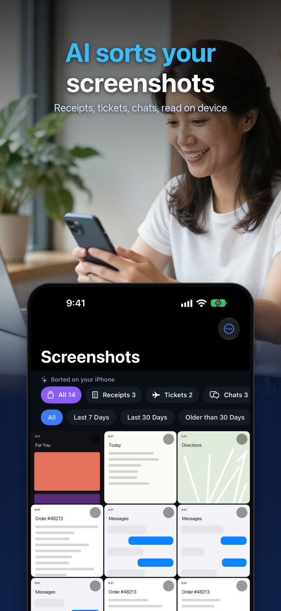
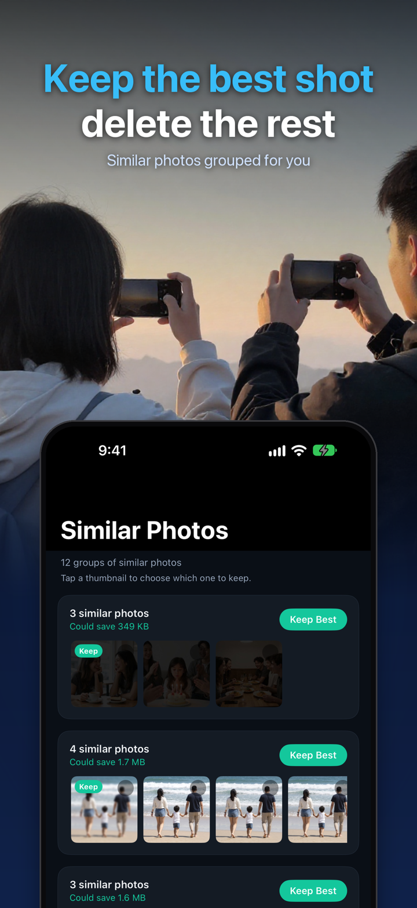
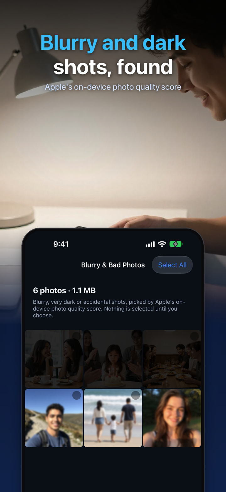
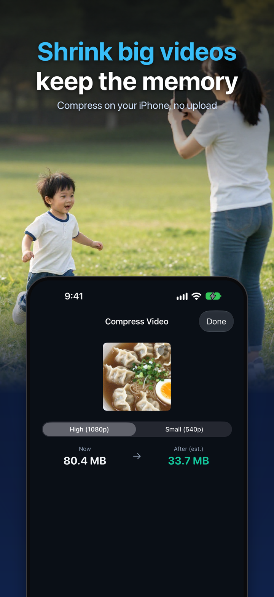

Free iPhone storage cleaner
PocketGB scans your library in seconds and shows how many gigabytes you can get back, then helps you clear them safely: similar photos, blurry shots, screenshots you no longer need, big videos. Everything runs on your iPhone.
How it works
Scan
Open the app and it reads your library in seconds, then tells you how many GB are sitting in bursts, near-duplicates, blurry shots and screenshots you no longer need. Each category is one tap away, and you decide what goes.
Swipe
Pick a month and swipe: left to delete, right to keep. It is the fastest way through a year of photos, and you can undo any swipe before you confirm.
Screenshots
Receipts, tickets, chats, maps and codes are grouped by what they are, read on the device by Apple Intelligence on supported iPhones. "Safe to delete" lists the ones that have expired: old one-time codes, past tickets, old directions. Save receipts to their own album before you clean up.

Similar photos
Near-duplicates are grouped together and the sharpest, best-exposed shot with open eyes is marked "Best", with the reason. Keep it with one tap and let the rest go.

Blurry and accidental
Blurry, very dark and pocket shots are found with Apple's on-device photo quality score, shown together so you can clear them in one pass.

Videos
Large and duplicate videos are listed by size. Compress a big video right on your iPhone and keep the moment at a fraction of the space. Duplicate contacts can be merged in one tap, and a Battery page explains drain rate and time left in plain words.

Safety and privacy
Everything you remove goes to the Photos app's Recently Deleted album first, where it stays for 30 days, so a slip can always be undone. Scanning, grouping, screenshot sorting and video compression all run on your iPhone: no uploads, no account, no ads. PocketGB only asks for access to your photos, and only when you start a scan.
Android · beta
The same scan, similar-photo groups and swipe cleanup, free on Android. Anyone can join the test in three taps.
Join the tester groupThen join the test →
Questions: bestappsclub@gmail.com
Yes. Every feature is free, with no subscription, no ads and no account. There is nothing to unlock.
Nothing is deleted without your tap, and everything goes to Recently Deleted first, where it stays for 30 days. In similar-photo groups the best shot is kept for you.
No. Scanning, grouping, screenshot sorting and video compression all run on your iPhone. There are no uploads and no account.
Screenshots that have done their job: one-time codes older than a day, tickets for past events and old directions. PocketGB reads them on your iPhone and lists them so you can clear them in one go.
iOS keeps compressed pages in memory on purpose and frees them when an app needs the space. The Memory page shows this in plain words rather than as a problem to fix.
Yes, in testing on Google Play. Join the tester group from the Android section of this page, then join the test and install from Google Play.
Email bestappsclub@gmail.com.